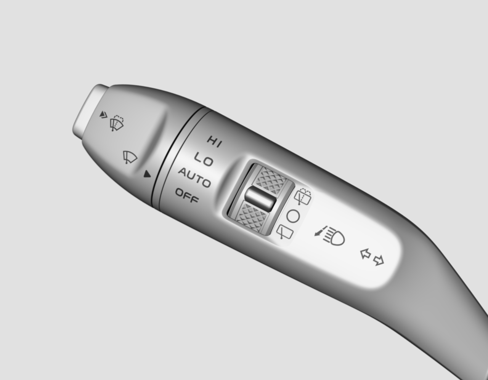

На конце левого рычага переключателя на рулевой колонке находится кнопка PUSH, которую можно нажать в 2 положение
Прерывистый режим: после включения питания автомобиля нажать кнопку PUSH на конце левого рычага переключателя на рулевой колонке в положение 1 и сразу отпустить, передний стеклоочиститель выполнит 1 взмах; если нажать и удерживать кнопку PUSH в положении 1, передний стеклоочиститель будет непрерывно работать на низкой скорости до отпускания кнопки PUSH.
Омывание: после включения питания автомобиля нажать кнопку PUSH на конце левого рычага переключателя на рулевой колонке в положение 2 для активации функции омывания.
Левый рычаг переключателя на рулевой колонке имеет 4 положения управления передним стеклоочистителем и 3 положения управления задним стеклоочистителем
OFF: выключено
INT/AUTO: прерывистый режим / автоматический датчик дождя
LO: низкая скорость
HI: высокая скорость
Омывание заднего стекла: распыление воды на заднее стекло и несколько взмахов
Выключение заднего стеклоочистителя: задний стеклоочиститель выключен
Взмахи заднего стеклоочистителя: прерывистые взмахи заднего стеклоочистителя